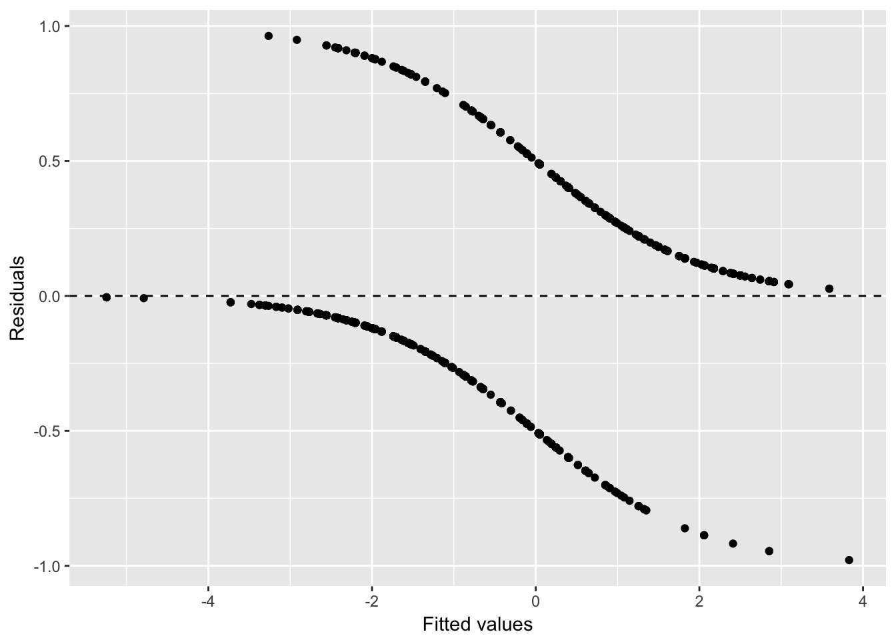

Section 2 Methodology
2.1 Backward Selection
For backward selection, we start out by including all of the variables we have as explanatory variables and construct a regression model from that. We then take out one of the insignificant predictor (predictor whose p-value is greater than the significance level of 0.05 and whose p-value is the greatest among all variables), and then construct another model using the remaining variables. Repeat the process until we obtain a model with all significant predictors.
2.2 Logistic Regression
In our project, since our response variable is a binary variable, we are going to use logistic regression for the model. Logistic regression is a type of generalized linear model. Its equation is in the form of \(ln(\frac{p}{1-p})=\ln(odds)=\alpha_0+\alpha_1x_1+\alpha_2x_2+\dots +\alpha_nx_n\), where \(p\), in this context, is the probability of survival–1 means the passenger survived and 0 otherwise, and \(x_1, x_2, \dots, x_n\) are explanatory variables. The right hand side of this equation is the same as in a linear model, hence it is called generalized linear model. The left-hand side is the natural log of odds, where odds is a representation of probability, and it equals to \(\frac{p}{1-p}\). Once we fit a model, we can predict the probability of success \(p\) by \(p = \frac{1}{1+e^{-RHS}}\), where \(RHS=\alpha_0+\alpha_1x_1+\alpha_2x_2+\dots +\alpha_nx_n\).
To perform logistic regression, we can use glm() function, which stands for generalized linear model, in R, and specify the parameter family = binomial(link = "logit").
2.3 Homser-Lemeshow Goodness-Of-Fit Test
Since we decided to use logistic regression for our model, the assumptions we need to verify are not the same as in a linear regression model. For example, we cannot plot a residual plot to see whether the residuals have a pattern because however good or bad a model is, the residuals will always show a pattern, as they follow 2 curves: positive residuals follow the curve \(1 - \frac{1}{1+e^{-predicted}}\) and the negative residuals follow the curve \(0 - \frac{1}{1+e^{-predicted}}\) as seen below:

To examine how good a logistic regression model is, we can use Homser-Lemeshow goodness-of-fit test. The idea of this test is to divide the sample into several groups according to their predicted values, and compare the expected proportion of success to the observed proportion of success in each group to see whether there is a significant difference between the expected and the observed proportion. The null hypothesis of this test is that there is no difference between the expected and the observed proportion of success. In other words, if the p-value of this test is too low, it means that we have strong evidence that the fit is not good enough.
However, there are some restrictions for this test as well. One of which is that the choice of number of groups may affect the p-value significantly, and there is no clear rule for how to choose the most proper number of groups. Also, it does not take overfitting into consideration. Because of these problems, we will only use Homser-Lemeshow goodness-of-fit test to give us a rough sense of how good a model is, but not necessarily to reject that model altogether.
To perform Homser-Lemeshow goodness-of-fit test, we can use hoslem.test() function in ResourceSelection package in R.
2.4 Akaike Information Criterion (AIC)
We will also use Akaike information criterion to evaluate our model. This criterion is a method to compare several regression models together. It is a function of the goodness-of-fit of a model and the number of parameters it takes. It gives reward to better goodness-of-fit and gives penalty to increasing number of explanatory variables The advantage of this criterion is that it will give penalty to over-fitting. However, the limitation of this method is that there is no natural scale to compare with, so it is possible that all of our models have poor fit, and we just choose the relatively best one among these.
This is very convenient in R. It is included in the summary() function and we can also call it using AIC() function.